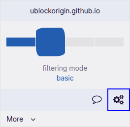
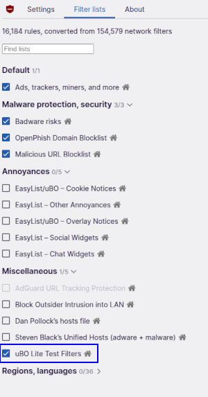
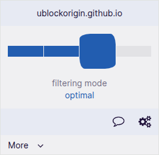
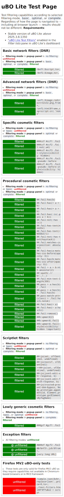
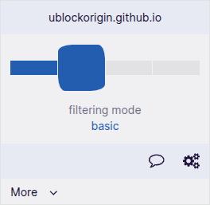
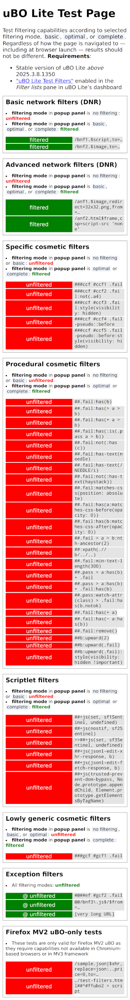
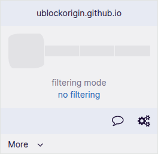

Steps
Action
Expected Result
Screen
0
Prerequisites
0.1
Install “uBlock Origin Lite” (“uBOL”)
Version must be 2025.812.1339 or above
Edge Extension ID:cimighlppcgcoapaliogpjjdehbnofhn
Chrome Extension ID:ddkjiahejlhfcafbddmgiahcphecmpfh
After installation uBOL is immediately ready to filter content.
1
Verify test page without filtering
1.1
Navigate to uBO Lite Test Page (“test page”)
The result should match the screenshot: All tiles are “unfiltered”
2
Enabling filters for test page
2.1
Click uBOL's toolbar icon, then click the cogs icon in the popup panel to access uBOL's dashboard
uBOL's dashboard opens

2.2
Click the “Filter lists” pane, then check the list “uBOL Lite Test Filters” under “Miscellaneous” section
The “Filter lists” pane in uBOL's dashboard opens

3
Verify test page with “optimal” filtering mode
3.1
Click uBOL's toolbar icon, then move the slider to “optimal” position.
There may be a warning that uBOL is requesting additional permissions for all
There may be a warning that uBOL is requesting additional permissions for all
ublockorigin.github.io sites, click “Allow”.Filtering mode for the site is set to “optimal” and the page is reloaded

3.3
Wait for the page to finish reloading and verify the page content
The result should match the screenshot: Tiles in “Basic network filters”, “Specific cosmetic filters”, “Procedural cosmetic filters”, and “Scriptlet filters” sections are all “filtered”
4
Verify test page with “complete” filtering mode
4.1
Click uBOL's toolbar icon, then move the slider to “complete” position
Filtering mode for the site is set to “complete” and the page is reloaded

4.2
Wait for the page to finish reloading and verify the page content
The result should match the screenshot: Tiles in “Basic network filters”, “Specific cosmetic filters”, “Procedural cosmetic filters”, “Scriptlet filters”, and “Lowly generic cosmetic filters” sections are all “filtered”

5
Verify test page with “basic” filtering mode
5.1
Click uBOL's toolbar icon, then move the slider to “basic” position
Filtering mode for the site is set to “basic” and the page is reloaded

5.2
Wait for the page to finish reloading and verify the page content
The result should match the screenshot: Tiles in “Basic network filters”, “Specific cosmetic filters”, “Procedural cosmetic filters”, “Scriptlet filters”, and “Lowly generic cosmetic filters” sections are all “unfiltered”

6
Verify test page with “no filtering” mode
6.1
Click uBOL's toolbar icon, then move the slider to “no filtering” position
Filtering mode for the site is set to “no filtering” and the page is reloaded

6.2
Wait for the page to finish reloading and verify the page content
The result should match the screenshot: All tiles in all sections are “unfiltered”